Donc Stanford a une méthode de recherche appelée STORM, qui a réellement démontré dans des tests évalués par des pairs qu'elle produisait des articles 25 % plus organisés que la deuxième meilleure méthode. J'ai donc intégré tous ces principes de STORM dans ma propre compétence Claude, que je vais vous offrir tout à fait gratuitement, et vous obtenez un résultat qui ressemble à ceci. C'est un briefing HTML qui a été élaboré selon cinq perspectives différentes d'agents, et il a été vérifié.
Interface & Outils : Navigateur web affichant un article de réseau social et un document rédigé.
Contenu textuel & Code : Texte sur l'utilisation de Claude et le système de recherche STORM de Stanford, puis un article complet structuré. [DESC_IMAGE_1] Présentation visuelle d'un post discutant de l'optimisation des prompts avec Claude et STORM. [DESC_IMAGE_2] Affichage du résultat final d'un article produit via la méthodologie STORM intégrée.
Action / Démonstration : Le présentateur commente le contenu textuel affiché à l'écran concernant la recherche STORM.
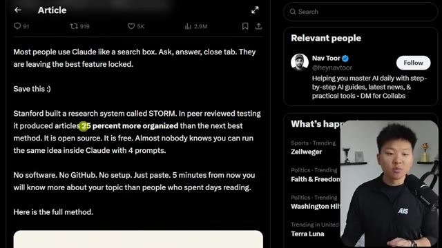
🔍 Agrandir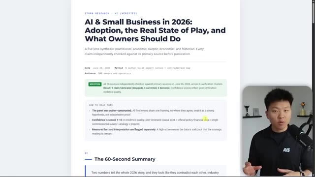
🔍 AgrandirC'est-à-dire que si je fais défiler vers le bas, vous pouvez voir que les différentes perspectives fournissent une analyse sur chaque partie du rapport, mais tout en bas, vous pouvez voir que nous avons différentes sources qui ont été confirmées, corrigées ou rétrogradées. C'est-à-dire qu'au premier passage, le briefing aurait contenu des informations qui n'étaient tout simplement pas correctes. Mais comme notre compétence effectue toute cette vérification sur la V2, nous pouvons avoir beaucoup plus confiance en ce résultat. L'idée générale de Storm est donc qu'au lieu de lancer un simple prompt et d'avoir un seul angle de recherche, nous utilisons un tas d'angles différents. Parce que si vous envoyez simplement un prompt à Claude, il y aura un tas de angles morts dans ce plan de recherche. Storm utilise donc ces cinq
Interface & Outils : Interface de document/rapport textuel et diapositive de présentation interactive de type diagramme.
Contenu textuel & Code : Texte du rapport avec statuts de vérification (Confirmed, Corrected, Demoted) et sources (US Census Bureau, Federal Reserve, etc.) ; diapositive 'Claude as a search box' avec schémas de prompt.
Action / Démonstration : Le présentateur commente le contenu du rapport affiché à l'écran et présente des concepts schématiques sur l'utilisation de l'IA.
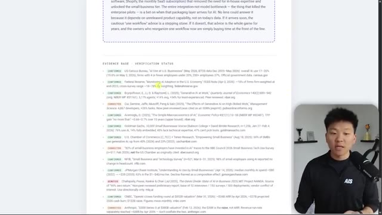
🔍 Agrandir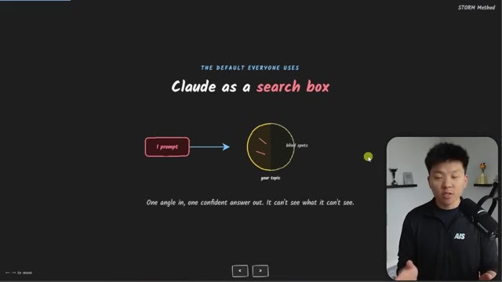
🔍 Agrandirperspectives. Nous avons un praticien, un universitaire, un sceptique, un économiste et un historien. Et chaque angle trouve une faille que les autres angles manquent. Et toute cette idée d'avoir différents agents qui jouent en quelque sorte le rôle de leur propre personnalité et de leur propre, vous savez, parcours avec différents domaines d'expertise est vraiment, vraiment bénéfique. Si vous avez vu d'autres vidéos où j'ai parlé de quelque chose comme la compétence de critique ou de la façon dont j'aime utiliser des équipes d'agents pour être fondamentalement un conseil, c'est vraiment, vraiment utile pour identifier différentes perspectives. Et comme je l'ai dit, trouver des failles que les autres angles vont manquer. Et donc laissez-moi juste vous montrer un exemple très rapide de pourquoi c'est si bénéfique. Donc Claude Code a nativement une fonctionnalité appelée recherche approfondie,
Interface & Outils : Logiciel de présentation ou outil de mind mapping interactif.
Contenu textuel & Code : Texte du schéma : 'Five experts, five blind spots caught', avec les bulles des différents profils d'experts et la citation 'Each angle finds a hole the others miss. The gaps are the whole point.'
Action / Démonstration : Présentation visuelle du concept des multiples agents experts analysant un sujet sous différents angles.
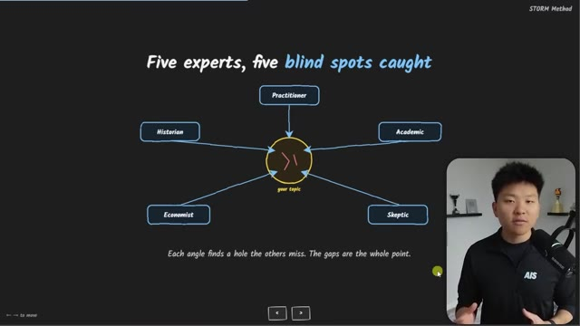
🔍 Agrandirqui a été lancée avec les flux de travail dynamiques. Donc si vous venez dans Claude et que vous effectuez une commande de recherche approfondie comme celle-ci, vous pourrez essentiellement saisir un sujet de recherche et cela lancera un flux de travail dynamique, qui déclenchera des centaines d'agents en arrière-plan. Je pense que dans cet exemple, il y avait 103 agents différents en cours d'exécution. Cela vous donnera donc un rapport de recherche approfondie assez solide. Comme vous pouvez le voir ici en bas, cela ne m'a en fait fourni aucun résultat. Cela a simplement intériorisé tout cela. J'ai donc dit : où est le rapport ? Cela m'a donné ce fichier Markdown, qui est correct, mais il n'est vraiment pas si approfondi que ça. Et il n'y a pas autant de sources que nous le souhaiterions. Il n'y en a que deux ici en haut.
Interface & Outils : Application web "Deep Research" (Herk-2.0)
Contenu textuel & Code : Commande `/deep-research AI SMB report 2026 on adoption, state of the industry, and practical takeaways for SMB owners`
Action / Démonstration : Exécution d'un flux de travail dynamique de recherche approfondie avec analyse multi-angles et vérification des sources.
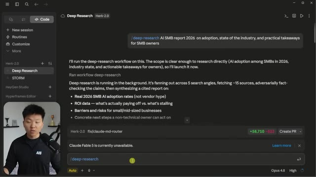
🔍 AgrandirEt ensuite, il y en a quelques autres non confirmées ici en bas, ainsi que quelques questions ouvertes. Et puis j'ai pris ce prompt exact que j'ai demandé dans la recherche approfondie et je l'ai mis dans une compétence storm. Donc j'ai dit : Hé, recherche storm, fais ceci. Et il a dit : d'accord, super. Voici le sujet. Je vais exécuter le pipeline storm. Maintenant, j'ai exécuté ces cinq agents, comme vous pouvez le voir, le praticien, l'académique, le sceptique, l'économiste et l'historien. Nous faisons converger tout cela ensemble. Nous voyons où ils sont en désaccord. Et ensuite, nous allons exécuter six agents de plus, qui vont vérifier tous ces faits que vous venez de trouver. La vérification est terminée. Et maintenant, vous avez ce rapport HTML, qui va systématiquement ressembler à ceci à chaque fois avec un 60
Interface & Outils : Application web STORM (Herk-2.0)
Contenu textuel & Code : Commande `/storm-research AI SMB report 2026 on adoption...` et résultats de recherche textuels avec exécution de 5 agents en parallèle.
Action / Démonstration : Exécution d'une recherche approfondie et synthèse par agents multiples via la compétence STORM.
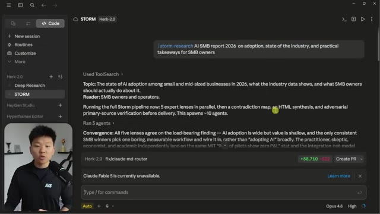
🔍 Agrandirdeuxième résumé des conclusions clés. Et toutes ces conclusions clés sont également classées par niveau de fiabilité. Vous pouvez voir ici, fiabilité élevée, neuf sur 10. Celle-ci a été soutenue par l'universitaire et le sceptique, et elle a été contestée par le praticien et l'économiste. Et cela continue ainsi dans le reste de tout le rapport HTML ici. Il met également en évidence l'hypothèse sur laquelle repose ce briefing et la sixième perspective manquante. Les cinq perspectives examinent l'entreprise du point de vue du propriétaire, les taux d'adoption, la productivité, le retour sur investissement. Aucune d'elles ne s'est mise à la place du client ou de l'employé de première ligne. C'est donc la sixième perspective manquante ici. Et je dirais alors simplement, très bien, lance cette sixième perspective et exécute une version 3 de ce rapport HTML. Et ensuite, cela nous donne vraiment des résultats pratiques
Interface & Outils : Interface web et tableau de bord d'agent IA (Her-2.0 / STORM)
Contenu textuel & Code : Document textuel listant des conclusions clés classées par niveau de fiabilité (Reliability : High, 9/10), avec les sections 'Supported by' et 'Challenged by'.
Action / Démonstration : Navigation et présentation visuelle des conclusions clés issues d'un rapport généré par l'IA.
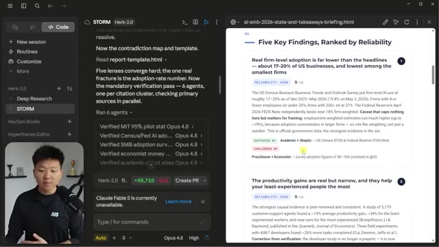
🔍 Agrandirenseignements ici. Et ce qui est cool avec ça, c'est que comparé à quelque chose comme le deep research, où ça va essentiellement vous donner un déversement de cerveau d'un tas de statistiques qu'il a trouvées, le storm research peut vraiment être personnalisé pour vous. Vous pouvez aller dans la compétence et dire, hé, voici ce que je fais, voici mon entreprise, voici nos buts. Chaque fois que vous lancez un rapport storm research, faites-le sur mesure pour nous. Qu'est-ce qu'on veut réellement faire différemment maintenant que vous avez compris toutes ces nouvelles données et recherches ?
Interface & Outils : Interface web personnalisée avec un panneau de configuration à gauche (options Deep Research, STORM) et un rendu de rapport HTML à droite.
Contenu textuel & Code : Texte du rapport de recherche STORM montrant des sections de vérification ('What's Safe to Assert') et l'activité de 6 agents parallèles (Opus 4.8).
Action / Démonstration : Navigation et affichage des résultats du STORM research dans l'interface interactive.
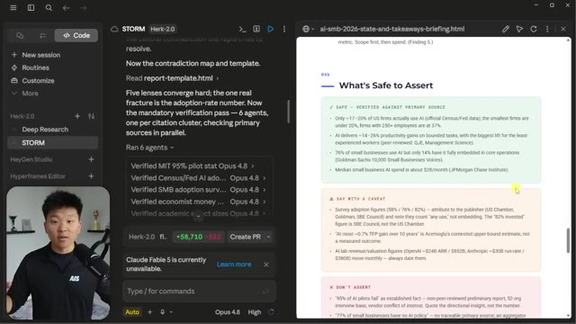
🔍 AgrandirEt donc, dans cet exemple précis avec la recherche approfondie et la tempête, j'ai introduit cela dans Codex, donc un modèle d'IA complètement différent, et j'ai dit : « Hé, lequel est le meilleur ? » Et il est revenu en disant que le briefing HTML est meilleur. Il a une meilleure qualité de preuve. Il est beaucoup plus solide. Il a une diversité de sources beaucoup plus forte. Il a une thèse beaucoup plus forte. Il est plus exploitable. Il a un meilleur contrôle des risques et il est meilleur pour la vidéo et le contenu.
Interface & Outils : VS Code (ou éditeur similaire)
Contenu textuel & Code : Texte de comparaison sous forme de tableau évaluant la qualité des preuves, la diversité des sources, la thèse centrale, l'actionnabilité, le contrôle des risques et l'utilisation pour le contenu, avec un verdict déclarant que le briefing HTML est meilleur.
Action / Démonstration : Affichage et lecture d'un rapport comparatif généré par l'IA dans l'éditeur de code.
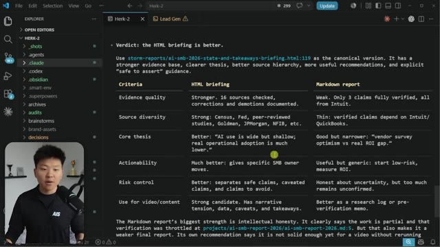
🔍 AgrandirDonc dans l'ensemble de ces six catégories ici, Codex a pensé que le briefing HTML était meilleur. Et je ne connais pas les mesures exactes ici concernant le coût, mais la recherche Storm était plus rapide à exécuter et elle était 100 % moins chère car dans ce cas nous avons exécuté environ, c'était quoi, peut-être 12 agents au total. Alors que le rapport de recherche approfondie cette fois-ci a fait tourner plus de 100 agents. Peut-être que je devrais y aller un peu plus doucement sur cette exécution de recherche approfondie parce qu'elle a été touchée par les limites de taux de l'API. Mais c'est aussi un autre point du genre si vous allez lancer autant d'agents en même temps, vous risquez d'être limité par le taux. Alors qu'avec Storm, vous savez, ce sera toujours vos cinq personas.
Interface & Outils : Interface web STORM (Herk-2.0)
Contenu textuel & Code : Rapport de recherche avec des sections sur la vérification des sources (16/16 sources vérifiées) et la création d'un fichier HTML de briefing.
Action / Démonstration : Affichage des résultats d'une recherche et de la vérification de contenu par l'agent IA STORM.
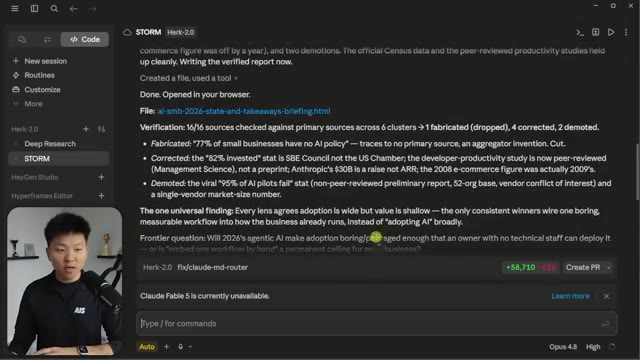
🔍 AgrandirDonc, de toute façon, je pense que vous comprenez maintenant la valeur de ce rapport. Laissez-moi vous montrer très rapidement comment cela fonctionne réellement et comment acquérir cette compétence. Il y a donc fondamentalement quatre invites. La première est celle où nous lui demandons de générer cinq angles différents, n'est-ce pas ? Nous avons ces cinq-là, dont j'ai parlé. C'est l'invite numéro un. Vous entrez simplement votre sujet de recherche. Et ensuite, quand le résultat arrive, vous entrez l'invite numéro deux, qui est la carte des contradictions. Donc, cela dit : « Hé, où est-ce que les perspectives se contredisent mutuellement ? »
Interface & Outils : Interface web de X (Twitter) affichant un article ou un post long.
Contenu textuel & Code : Texte du guide présentant le premier prompt de recherche multi-perspectives (« I need to research [YOUR TOPIC]. Simulate 5 different expert perspectives... ») et le présentateur à l'écran.
Action / Démonstration : Le présentateur explique le contenu du prompt affiché à l'écran concernant la méthode de recherche en plusieurs perspectives.
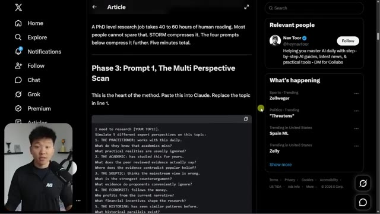
🔍 AgrandirLequel a de bonnes preuves ? Lequel a des preuves faibles ? Et fondamentalement, cela les pousse à analyser les productions des uns et des autres. Et donc, ce que nous faisons ici, c'est que nous enchaînons fondamentalement quatre invites de suite, puis nous obtenons une synthèse et ensuite nous obtenons l'évaluation par les pairs. Donc, ce que j'ai décidé de faire, c'est de l'exécuter de mon côté. Ça a très bien fonctionné. Et j'ai dit : « Super, regroupe tout cela dans une compétence. » Je peux donc littéralement simplement te donner une invite, te donner un sujet, et tu fais tout ce travail pour moi. Et tu vas me donner un modèle cohérent pour que, chaque fois que j'exécute ceci, tu me donnes un rapport HTML qui ressemble toujours à ceci. Donc, ce à quoi cela ressemble maintenant, c'est que dans mon dossier dot Claude, j'ai un tas de compétences, comme vous pouvez le voir. Et si je vais à ma compétence de recherche storm,
Interface & Outils : Interface web de X (Twitter) et lecteur de documents ou article en ligne.
Contenu textuel & Code : Texte d'un article et prompts de révision par les pairs (« Now peer review your own research briefing: 1. CONFIDENCE SCORES... ») et question de prospective (« The Frontier Question »).
Action / Démonstration : Le présentateur commente et présente un guide textuel de prompts enchaînés pour l'analyse et la synthèse de recherche.
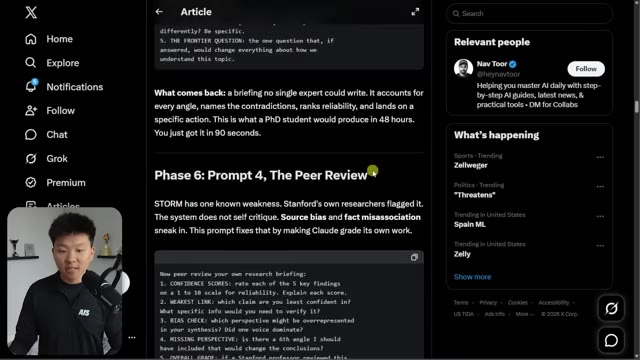
🔍 Agrandir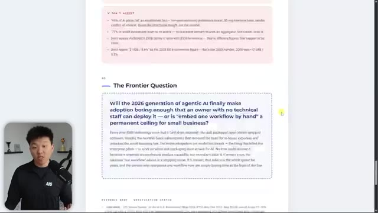
🔍 Agrandiret j'ouvre le fichier skill.md, voilà ce que nous avons. Donc la recherche storm, elle transforme un sujet en un briefing HTML vérifié à perspectives multiples. Elle simule cinq angles d'experts sur le sujet, cartographie où ils se contredisent, synthétise le tout en un seul rapport HTML autonome, puis évalue par pair de manière contradictoire ses propres résultats et vérifie chaque citation par rapport à sa source principale avant de livrer.
Interface & Outils : VS Code (Visual Studio Code)
Contenu textuel & Code : Documentation Markdown du fichier skill.md décrivant le fonctionnement de Storm Research (turns one topic into a verified, multi-perspective HTML briefing).
Action / Démonstration : Navigation et affichage du contenu du fichier skill.md dans l'éditeur de code.
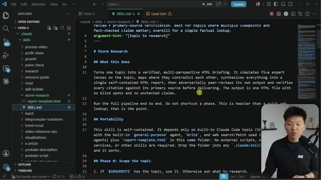
🔍 AgrandirVous remarquerez également que dans cette compétence, nous avons un modèle de rapport en HTML. Je vais donc également vous l'offrir entièrement gratuitement. Il est référencé dans la compétence et indique : « Hé, une fois que vous avez trouvé toutes les informations, mettez-les simplement en HTML et assurez-vous qu'il ressemble toujours à ça. » C'est donc simplement pour assurer la cohérence de mon côté, et j'apprécie vraiment cela. Je vais donc continuer à descendre et à expliquer comment cela fonctionne. Mais si vous voulez vraiment aller récupérer ces deux ressources, rendez-vous simplement dans ma communauté School gratuite.
Interface & Outils : VS Code (éditeur de code) et navigateur web (visualisation du rapport HTML).
Contenu textuel & Code : Code source HTML/CSS du modèle de rapport (`report-template.html`), rendu visuel du rapport et documentation Markdown (`SKILL.md`).
Action / Démonstration : Présentation du modèle de rapport HTML et du fichier de configuration de la compétence de recherche dans l'éditeur.
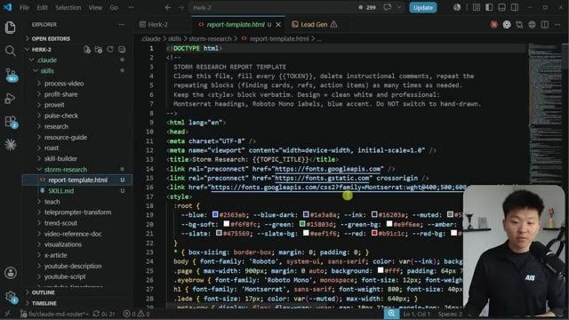
🔍 Agrandir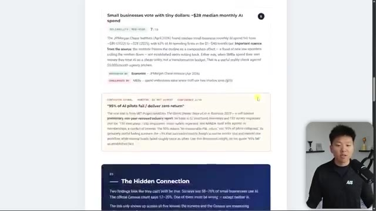
🔍 Agrandir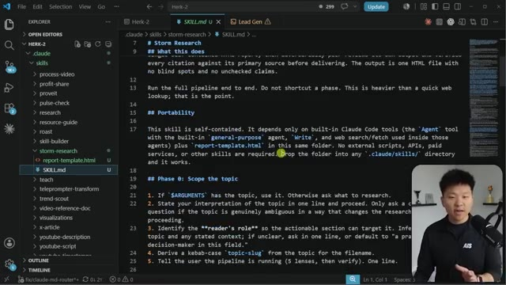
🔍 AgrandirLe lien pour cela se trouve dans la description. Tout ce que vous avez à faire, c'est d'entrer ici, de cliquer sur la salle de classe et de cliquer sur toutes les ressources YouTube, et vous pourrez trouver absolument toutes les vidéos YouTube et toutes les ressources que j'ai publiées et qui leur sont associées. Encore une fois, c'est entièrement gratuit de s'inscrire. Une fois que vous avez cette compétence, tout ce que vous avez à faire, c'est de donner ce fichier Markdown et le fichier HTML à Claude et de lui dire : « Hé, Claude, c'est une compétence appelée Storm Research. »
Interface & Outils : Interface web de la communauté, VS Code.
Contenu textuel & Code : Modules de formation dans la Classroom, code Markdown décrivant les compétences de recherche Storm (SKILL.md) pour Claude Code.
Action / Démonstration : Navigation dans la salle de classe de la communauté et exploration de l'arborescence de code dans VS Code.
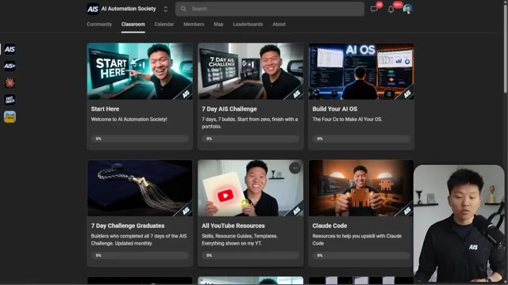
🔍 Agrandir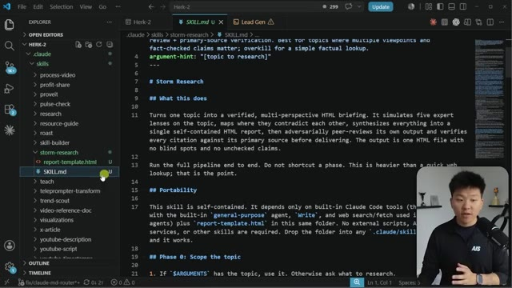
🔍 AgrandirMettez ceci dans le dossier .cloud et ensuite vous êtes pratiquement prêts. Et si vous ne savez pas ce qu'est une compétence, c'est fondamentalement juste un prompt. C'est fondamentalement juste un prompt principal que, chaque fois que je dis, hé, Claude, fais des recherches sur les tempêtes pour moi, va invoquer cette compétence. Elle va lire le tout et ensuite simplement l'exécuter pour vous. C'est donc très automatisé une fois que vous les avez fondamentalement installées. Et oui, cette compétence peut fonctionner avec Codex ou tout autre type d'agent différent que vous voulez.
Interface & Outils : Visual Studio Code
Contenu textuel & Code : Fichier `SKILL.md` situé dans `.claude > skills > storm-research`, détaillant le fonctionnement d'une compétence d'IA (prompt principal avec sections comme What this does, Portability, Phase 0).
Action / Démonstration : Navigation et explication de la structure du fichier de compétence (`SKILL.md`) placé dans le dossier `.claude`.
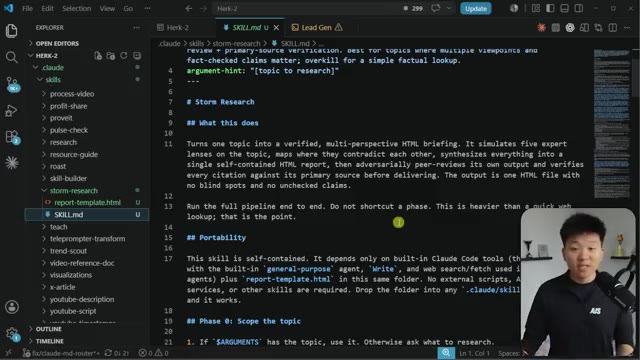
🔍 AgrandirC'est juste que dans Claude, ça doit spécifiquement être dans le dossier .Claude. Vous pouvez voir ici que j'ai un dossier appelé .Codex ou .Agents, et vous pouvez placer différentes compétences dans différents types de dossiers selon l'agent de codage que vous utilisez. Ceci est actuellement juste un tutoriel sur le code de Claude. Donc de toute façon, à partir de là, la phase zéro consiste à délimiter le sujet. Parfois, si vous ne lui donnez pas un sujet suffisamment précis, il posera quelques questions avant de se lancer et de déclencher la tempête.
Interface & Outils : Visual Studio Code (VS Code)
Contenu textuel & Code : Fichier Markdown (SKILL.md) décrivant les compétences de recherche "Storm Research" et structure des dossiers du projet (.claude, .codex, agents).
Action / Démonstration : Le curseur survole le dossier `.codex` dans l'explorateur de fichiers pour illustrer l'organisation des compétences par agent de codage.
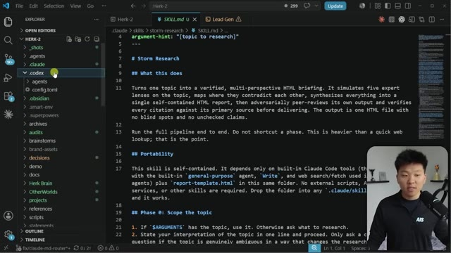
🔍 AgrandirEnsuite, il active les cinq prismes d'experts en parallèle. Et après, nous passons à la cartographie des contradictions, à la synthèse des rapports, puis à la vérification par révision de paires contradictoires. Et c'est là que nous obtenons notre résultat. Laissez-moi donc simplement ouvrir l'application de bureau Claude et démarrer une nouvelle session ici. Et je vais juste dire, hé Claude, s'il te plaît, lance une recherche storm pour moi sur les agents vocaux IA.
Interface & Outils : Visual Studio Code (VS Code)
Contenu textuel & Code : Fichier Markdown (`SKILL.md`) affichant les sections : "Phase 2: Map the contradictions", "Phase 3: Synthesize the HTML report", et "Phase 4: Adversarial peer review + verification".
Action / Démonstration : Le présentateur commente le code et les différentes étapes du workflow d'IA affiché à l'écran.
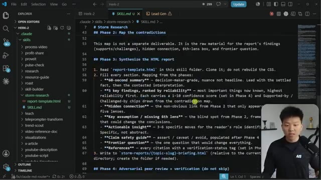
🔍 AgrandirEt donc ce que vous remarquerez ici, c'est que je n'ai pas utilisé de commande par slash, donc cela va quand même invoquer la compétence. Et ce que vous remarquerez aussi, c'est que ce n'est pas très précis, donc cela pourrait nous poser quelques questions. Juste ici, vous pouvez voir que c'est écrit, d'accord, exécution de la compétence storm research. Donc c'est ainsi qu'il a procédé pour parcourir storm research. Et l'argument dont il a actuellement conscience, ce sont les agents vocaux d'IA. Il revient et dit, d'accord, voici le sujet, voici le lecteur, et il sait que je suis un éducateur en IA, et je décide potentiellement si les agents vocaux d'IA valent la peine de faire une vidéo ou si ce n'est que du superflu.
Interface & Outils : Application web d'assistant IA avec un panneau latéral de navigation et une zone de chat principale.
Contenu textuel & Code : Prompt utilisateur : "Hey Claude, please run a storm research for me on voice AI agents.", suivi de l'exécution "Running skill /storm-research".
Action / Démonstration : L'agent IA invoque automatiquement la compétence de recherche à partir du texte saisi par l'utilisateur.
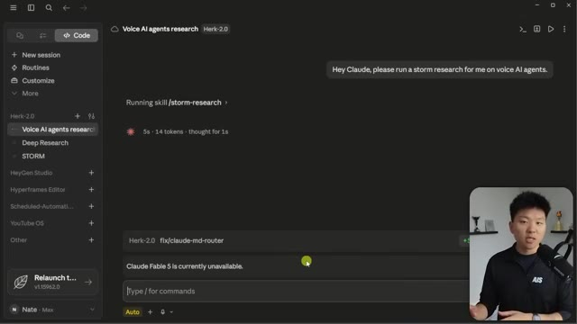
🔍 AgrandirLe pipeline est donc en train de s'exécuter. Si j'ouvre ceci, vous pouvez voir qu'il va lancer ces cinq agents, le praticien, l'académique, le sceptique, et tous les autres dont nous avons besoin. Et ce qui est vraiment génial, c'est que vous pouvez cliquer dessus pour voir ce qu'ils font. Donc, si je clique sur l'économiste, par exemple, voici le prompt que notre session principale a envoyé à ce sous-agent. Donc maintenant, nous pouvons voir que le sous-agent en bas navigue sur le web. Il utilise un outil. Il fait des recherches. Nous pouvons cliquer sur l'académique. Nous pouvons voir que c'est le prompt de l'académique. Et encore une fois, le sous-agent académique est, vous savez, en train de faire tout ça en bas. Maintenant, pendant que cela s'exécute, laissez-moi vous expliquer rapidement la différence entre avoir des sous-agents et avoir des équipes d'agents. Les sous-agents, c'est fondamentalement
Interface & Outils : Application web de recherche par agents IA avec webcam du présentateur incrustée en bas à gauche.
Contenu textuel & Code : Texte décrivant le pipeline "Voice AI agents research" et la liste des 5 lentilles d'experts en cours d'exécution en parallèle (4 running tasks, 201.9k tokens).
Action / Démonstration : Exécution d'un pipeline multi-agents effectuant des recherches et analyses en parallèle.
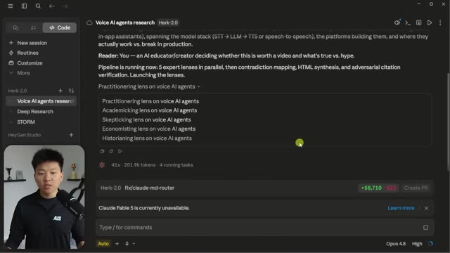
🔍 Agrandiroù nous avons une session principale. Donc cette session juste ici, c'est Claude. C'est à lui que nous parlons. Et tous ces sous-agents travaillent pour cette session principale. Donc la session principale parle à ces cinq-là, mais ces cinq-là ne peuvent pas se parler entre eux. Et c'est une distinction importante parce que c'est ce que vous avez réellement dans le monde des équipes d'agents. Vous pouvez créer des équipes d'agents ou des conseils d'agents qui peuvent non seulement parler à votre session principale, mais qui peuvent aussi se parler entre eux.
Interface & Outils : Application web de recherche par agents IA (type interface de chat avancée)
Contenu textuel & Code : Liste des tâches en cours (« 5 running tasks ») affichant les différents angles d'analyse (« lenses ») sur les agents vocaux IA.
Action / Démonstration : Exécution simultanée de 5 agents sous la supervision d'une session principale.
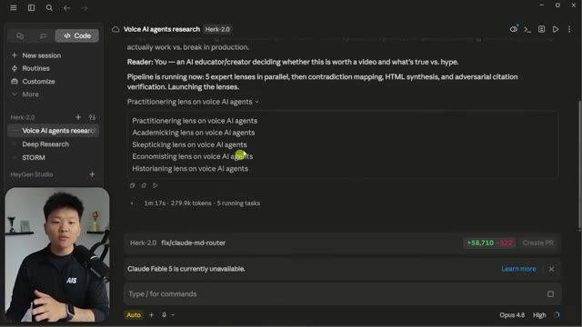
🔍 AgrandirEt c'est vraiment génial parce que ce que j'aime faire, c'est de lancer des équipes d'agents quand j'ai besoin d'aide pour décider de certaines idées ou sujets. Et je vais non seulement leur demander de faire des recherches pour moi, mais ensuite je vais les faire débattre entre eux. Donc ils vont littéralement se disputer entre eux jusqu'à ce qu'ils parviennent à une sorte de consensus. Les équipes d'agents sont toutefois beaucoup plus coûteuses que les sous-agents. C'est donc une distinction importante, je ferai d'autres vidéos sur les équipes d'agents plus tard, mais si vous voulez vraiment voir une analyse approfondie, regardez cette vidéo que j'ai étiquetée juste ici.
Interface & Outils : Logiciel de présentation ou tableau blanc numérique (type Miro / Excalidraw).
Contenu textuel & Code : Texte et schémas comparatifs : 'Sub-agents' (liens centralisés, 'report back only') face à 'Agent team' (liens croisés, 'They argue, disagree, and hand you one consensus').
Action / Démonstration : Le présentateur explique la différence conceptuelle entre une architecture de sous-agents classiques et une équipe d'agents autonomes qui collaborent et débattent.
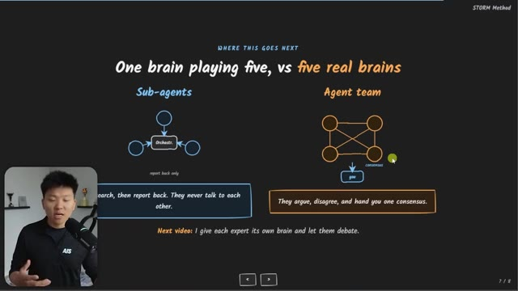
🔍 AgrandirEt aussi si vous voulez regarder une autre vidéo où j'ai fait une plongée encore plus profonde sur les sous-agents, alors vous pouvez regarder cette vidéo juste ici. Maintenant, vous pouvez voir que tous ces sous-agents ont fonctionné sur Opus 4.8. Si vous ne voulez pas faire ça, vous n'êtes pas obligé, vous pourriez faire fonctionner tous ces sous-agents sur Haiku ou Sonnet si vous le souhaitez, mais dans ce cas, j'ai aimé qu'ils fonctionnent sur Opus. Mais les cinq lentilles sont intégrées, donc maintenant il va aller de l'avant et examiner les contradictions. Donc vous pouvez voir qu'il lit ce fichier, qui est le modèle de rapport. Il exécute ces agents en arrière-plan et maintenant il va commencer à vérifier toutes ces différentes citations et statistiques et les différentes choses que nos agents passifs initiaux avaient trouvées.
Interface & Outils : Interface web de recherche et d'agents IA (Herk-2.0 / Voice AI agents research)
Contenu textuel & Code : Liste des 5 agents exécutés en parallèle (« Ran 5 agents ») avec mention du modèle « Opus 4.8 » pour chacun, et le texte de synthèse des résultats.
Action / Démonstration : Affichage des résultats d'analyse et de cartographie des contradictions par les sous-agents d'IA.
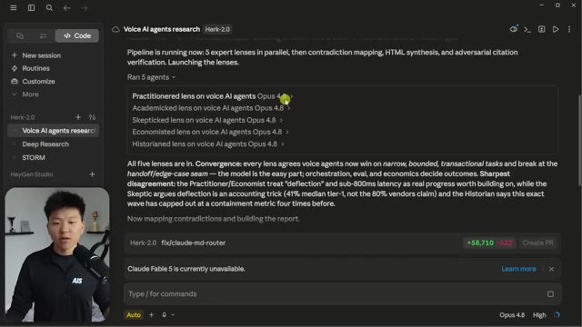
🔍 AgrandirAussi, je sais que dans cette vidéo, j'ai un peu alterné entre l'application Cloud Desktop et VS Code. Si vous me suivez depuis un moment, vous savez que j'aime généralement faire la plupart de mon travail dans VS Code. Cloud fonctionne fondamentalement de la même manière dans les deux. C'est juste une différence d'interface utilisateur, en réalité. Mais la raison pour laquelle j'ai choisi de montrer une partie de cette vidéo aujourd'hui dans l'application Desktop, c'est parce que je trouvais sympa de montrer les agents réels en train de s'exécuter ici.
Interface & Outils : VS Code et application Cloud Desktop.
Contenu textuel & Code : Fichier Markdown (`SKILL.md`) contenant des directives de recherche ("Storm Research", règles de vérification) et interface Cloud avec rapports de vérification et invite de commandes.
Action / Démonstration : Navigation et présentation des fichiers de configuration et des résultats de recherche au sein des deux environnements de développement.
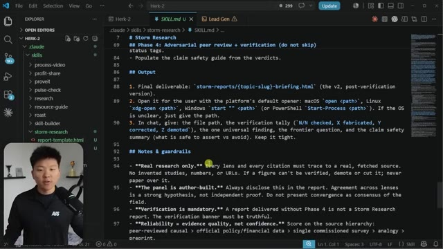
🔍 Agrandir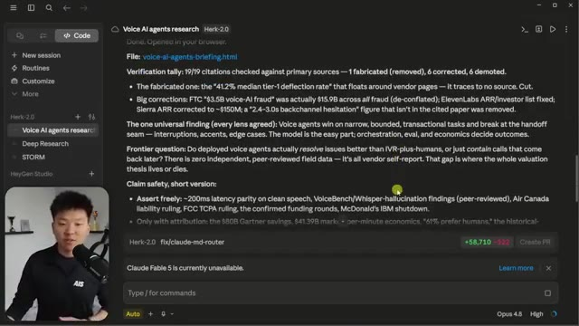
🔍 AgrandirMais vous pouvez voir que notre rapport est revenu. Donc, laissez-moi en fait l'ouvrir dans un navigateur. Vous pouvez voir qu'il s'agit de la version V2. Donc, tout a été vérifié. Si je fais défiler tout en bas, vous pouvez voir que les sources ont soit été rétrogradées, corrigées ou confirmées. C'est donc formidable. Nous avons notre résumé de 60 secondes. Nous avons nos principales conclusions, qui, bien évidemment, sont encore une fois classées par ordre de fiabilité. Donc, ce que je vous recommandes de faire, c'est d'aller récupérer la compétence, de la placer dans votre propre Claude et de jouer un peu avec.
Interface & Outils : Navigateur web affichant un document de recherche textuel formaté (Storm Research V2).
Contenu textuel & Code : Rapport intitulé 'Voice AI Agents: What's Real, What's Hype' avec des sections de synthèse, des avertissements de vérification de sources et des analyses.
Action / Démonstration : Le présentateur présente le rapport de recherche généré et commente le contenu vérifié et les sources.
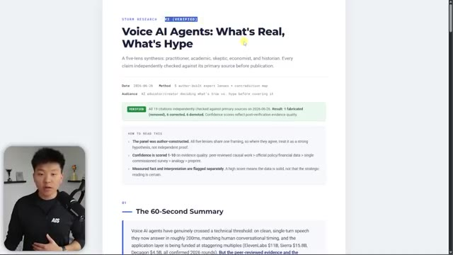
🔍 Agrandir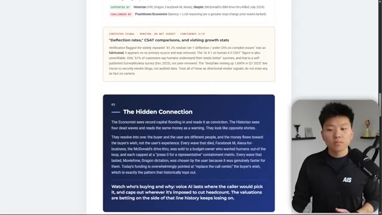
🔍 AgrandirAdaptez-le un petit peu plus à votre profil. Peut-être que vous pouvez jouer avec le rapport HTML si vous voulez qu'il ait un certain aspect, mais faites-le ensuite sur un sujet que vous connaissez vraiment bien et qui est important pour vous et votre entreprise. Et ensuite, lisez-le simplement et voyez où vous avez besoin de l'améliorer ou de le modifier un tout petit peu. Et peut-être que vous voulez même ajouter un sixième angle ou un septième angle. Peut-être que pour moi et mon flux de travail, il serait utile d'ajouter par exemple un débutant en IA, parce que beaucoup de gens à qui nous enseignons sont des débutants en IA.
Interface & Outils : Navigateur web / Page HTML stylisée
Contenu textuel & Code : Rapport de recherche intitulé 'Voice AI Agents: What's Real, What's Hype' avec des sections de résumé, des métadonnées de vérification et des notes méthodologiques.
Action / Démonstration : Présentation et affichage à l'écran d'un rapport web généré ou personnalisé en lien avec le sujet abordé.
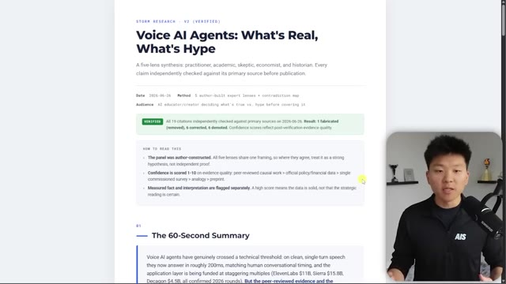
🔍 AgrandirOu peut-être que ce serait bien pour moi d'ajouter à la compétence un créateur de contenu ou quelque chose comme ça. Donc je suppose que la raison pour laquelle je dis ça, c'est parce que je pense que ce que vous devez retenir globalement de la vidéo, c'est oui, allez récupérer la compétence Storm et testez-la. Mais c'est aussi moins le fait que cette compétence spécifique et cette méthode spécifique de Stanford soient les meilleures pour tout le monde, mais je pense que les théories que vous pouvez en tirer, comme l'idée que plus vous avez de perspectives faisant des recherches et se contredisant les unes les autres, meilleure et plus holistique sera la recherche que vous obtiendrez réellement.
Interface & Outils : Navigateur web affichant un document PDF ou un rapport, et interface du réseau social X (Twitter).
Contenu textuel & Code : Texte de rapport sur l'intelligence artificielle vocale et publication sur Stanford STORM avec des détails sur son efficacité.
Action / Démonstration : Le présentateur commente le contenu affiché à l'écran concernant les outils et rapports de recherche en IA.
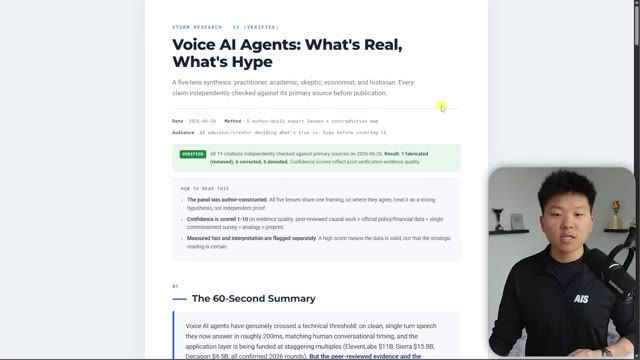
🔍 Agrandir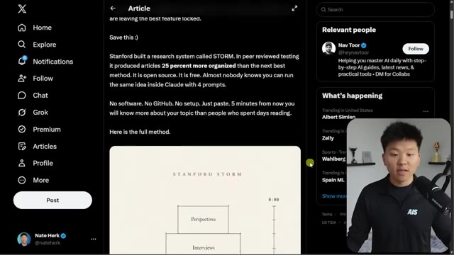
🔍 AgrandirFondamentalement, c'est toute l'idée que si vous n'avez pas d'expertise dans un domaine, voyez si vous pouvez l'emprunter d'une manière ou d'une autre. Voyez si vous pouvez aller de l'avant et éliminer vos propres angles morts, trouver les lacunes dans vos connaissances et aller utiliser des agents pour créer de petits experts un peu partout afin que vous ayez ce conseil d'agents qui possèdent différentes expertises et différentes connaissances et qui vous soutiennent peu importe ce que vous faites.
Interface & Outils : Application de présentation ou tableau blanc numérique (ex: Obsidian Canvas, Miro ou diapositive personnalisée) avec incrustation vidéo du présentateur.
Contenu textuel & Code : Texte affiché : "THE WHOLE POINT - Borrow expertise you don't have", "Five perspectives. A contradiction map. A peer review. In five minutes.", et des encadrés numérotés : "1. Kill your blind spots", "2. Find the real gaps", "3. Ship the call", ainsi qu'une commande "Run /storm-research on the topic you need to understand most."
Action / Démonstration : Le présentateur explique les concepts clés de la méthode STORM pour combler les lacunes d'expertise.
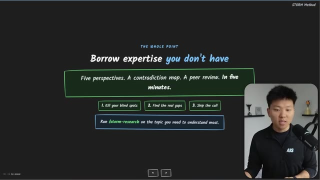
🔍 AgrandirDonc je sais que ça a été rapide aujourd'hui, mais j'espère que vous avez apprécié. Vous avez appris quelque chose de nouveau, si c'est le cas, veuillez mettre un pouce bleu, ça m'aide énormément. Et comme toujours, je vous remercie d'être arrivés jusqu'à la fin de la vidéo et je vous vois dans la prochaine. Merci les gars.
Interface & Outils : Présentation de type diaporama (probablement slides ou outil de mind-mapping).
Contenu textuel & Code : Texte affiché : "THE WHOLE POINT: Borrow expertise you don't have", "Five perspectives. A contradiction map. A peer review. In five minutes.", étapes "1. Kill your blind spots", "2. Find the real gaps", "3. Ship the call" et commande suggérée "/storm-research on the topic you need to understand most."
Action / Démonstration : Récapitulatif final de la méthode de recherche assistée par IA enseignée dans la vidéo.
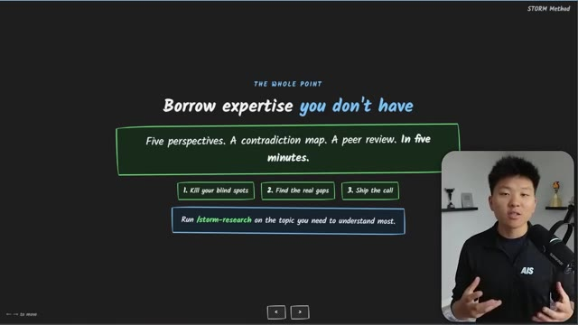
🔍 Agrandir